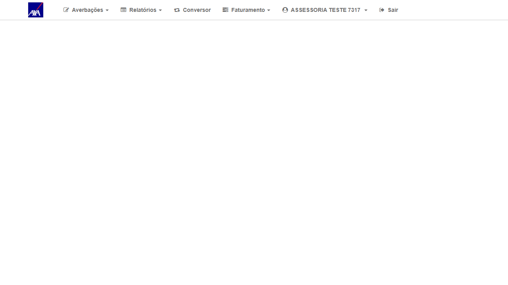

1. Resultado do Reteste
| # | Ação | Resultado obtido | Status |
|---|---|---|---|
| 1 | Login com perfil ASSESSORIA (ASSESS / Aig2026@e) no CITNET AXA ALFA | Login OK — perfil "ASSESSORIA TESTE 7317" confirmado | ✓ OK |
| 2 | Acessar menu "Autorização Prévia" (Aprovação de Prévias em Lote) | Sistema redireciona para /alfa/citnet/AutorizacaoPrevia/AutorizacaoPrevia e exibe tela de erro: System.NullReferenceException — Object reference not set to an instance of an object. A tela de aprovação não carrega. | ✗ FAIL |
2. Erro Capturado
Controller: AutorizacaoPrevia
Action: AutorizacaoPrevia
Exception: System.NullReferenceException
Message: Object reference not set to an instance of an object.
Timestamp: 16/06/2026 15:01:30
Padrão sistêmico: Idêntico ao detectado em #7381 (Conversor/Conversor) e #7379 (AverbacaoInternacional/AverbacaoImportacaoDefinitiva). Os três bugs ASSESSORIA falham com a mesma NullReferenceException em controllers distintos, sugerindo que o fix afeta um componente compartilhado de contexto/inicialização do perfil ASSESSORIA que não foi deployado no ALFA.
3. Dados do Cenário
| Campo | Valor |
|---|---|
| Ambiente | CITNET AXA ALFA — https://axa-hml-faturamento.nsseg.com.br/alfa/citnet/ |
| Perfil / Usuário | ASSESSORIA — ASSESS / Aig2026@e |
| Data do reteste | 16/06/2026 às 15:01 (horário servidor) |
| URL com erro | /alfa/citnet/AutorizacaoPrevia/AutorizacaoPrevia |
| Exception | System.NullReferenceException — Object reference not set to an instance of an object |
| Resultado | FAIL — Tela não carrega; aprovação em lote impossível |
4. Evidências
Clique nas imagens para ampliar.

01 — OK
Login ASSESSORIA confirmado no ALFA
Login ASSESSORIA confirmado no ALFA
02 — FAIL
Tela de erro ao acessar Aprovação Prévia: System.NullReferenceException — bug persiste
Tela de erro ao acessar Aprovação Prévia: System.NullReferenceException — bug persiste
5. Conclusão
O bug persiste no ambiente ALFA. A tela de Aprovação de Prévias em Lote com perfil ASSESSORIA não carrega, lançando System.NullReferenceException no controller AutorizacaoPrevia. Junto com os bugs #7381 e #7379, forma um padrão de falha sistêmica no perfil ASSESSORIA. Verificar deploy e componente compartilhado de inicialização de contexto.